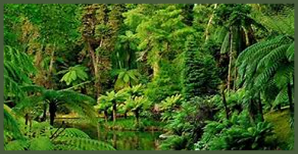
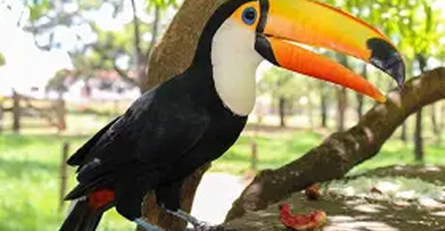
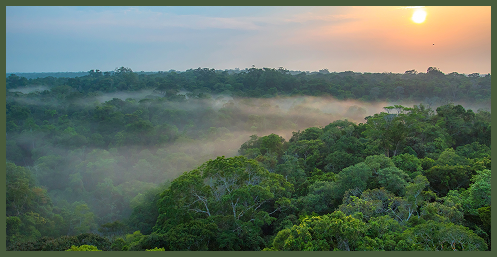

CAMPOS

Vegetação
A vegetação dos campos é predominantemente composta por gramíneas, com árvores e arbustos esparsos. Este bioma, também conhecido como pampa ou estepe, caracteriza-se por uma paisagem aberta e relativamente plana, adaptada a um clima com estações bem definidas.

Fauna
A fauna dos campos inclui uma variedade de animais, como o veado-campeiro, a ema, o tatu e diversas espécies de roedores e aves. Muitos animais são adaptados a viver em áreas abertas, aproveitando a vegetação rasteira para se alimentar e se abrigar.

Clima
O clima dos campos é subtropical, com estações bem marcadas. Os verões são quentes e os invernos frios, com geadas frequentes. A chuva é distribuída de forma relativamente regular ao longo do ano, mas podem ocorrer períodos de seca.

Importância Ecológica
Os campos são importantes para a conservação da biodiversidade, abrigando espécies únicas e atuando como corredores ecológicos. O solo fértil é também uma base para a atividade agrícola, mas a expansão desordenada ameaça o equilíbrio deste bioma.